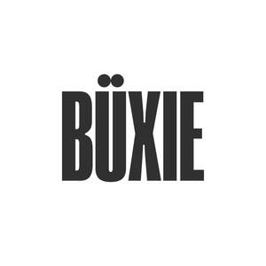

Trade Mark Journal No.2025/038 19 September 2025
UK00004261137 8 September 2025 (5,9,18,25,28,32,35,41)

- Class 5
- Fitness and endurance supplements; Whey protein dietary supplements; Nutritional supplements; Protein supplements; Homeopathic supplements; Herbal supplements; Yeast dietary supplements; Protein dietary supplements; Liquid nutritional supplements; Dietary supplements; Casein dietary supplements; Acai powder dietary supplements; Probiotic supplements; Flaxseed dietary supplements; Food supplements; Energy gels (dietary supplements); Mineral nutritional supplements; Soy protein dietary supplements; Vitamin supplements.
- Class 9
- Sports training eyeglasses; Prerecorded fitness DVDs; Boxing helmets; Sports glasses; Glasses for sports; Sports eyewear; Eyeglasses for sports; Eye protection wear for sports.
- Class 18
- Holdalls for sports clothing; Bags for sports clothing; Sports bags; Bags for sports; Sports packs; All-purpose sports bags.
- Class 25
- Sportswear; Sports clothing; Clothing for sports; Sports garments; Athletic clothing; Athletic footwear; Gymwear; Beachwear; Jogging bottoms [clothing]; Rainwear; Sport shoes; Moisture-wicking sports bras; Tracksuits; Sports bras; Sports wear; Sports shoes; Sports singlets; Moisture-wicking sports pants; Moisture-wicking sports shirts; Sports socks; Sports bibs; Sports vests; Sports caps; Bra straps; Bras; Fitted swimming costumes with bra cups; Jackets being sports clothing; Clothes for sport; Straps for bras; Nursing bras; Bra extenders; Bra strap extenders; Sports caps and hats; Athletic tights; Leggings [trousers]; Maternity leggings; Tennis shorts; Gym shorts; Shorts [clothing]; Jogging outfits; Padded pants for athletic use; Yoga shirts.
- Class 28
- Body-building apparatus [exercise]; Body-building apparatus; Belts for weightlifting; Belts (Weight lifting -) [sports articles]; Weight lifting belts [sports articles]; Gymnastic and sporting articles; Leg weights for sports training; Wrist straps for weightlifting; Apparatus for achieving physical fitness [for non-medical use].
- Class 32
- Sports drinks.
- Class 35
- Promotion of sports competitions and events; Advice relating to the business operation of fitness clubs; Business management of professional athletes.
- Class 41
- Sports and fitness; Health and fitness training; Exercise and fitness classes; Sports and fitness services; Fitness and exercise instruction; Exercise [fitness] training services; Fitness and exercise training services; Health club [fitness] services; Personal trainer services [fitness training]; Health and wellness training.
TO LA Brand Ltd